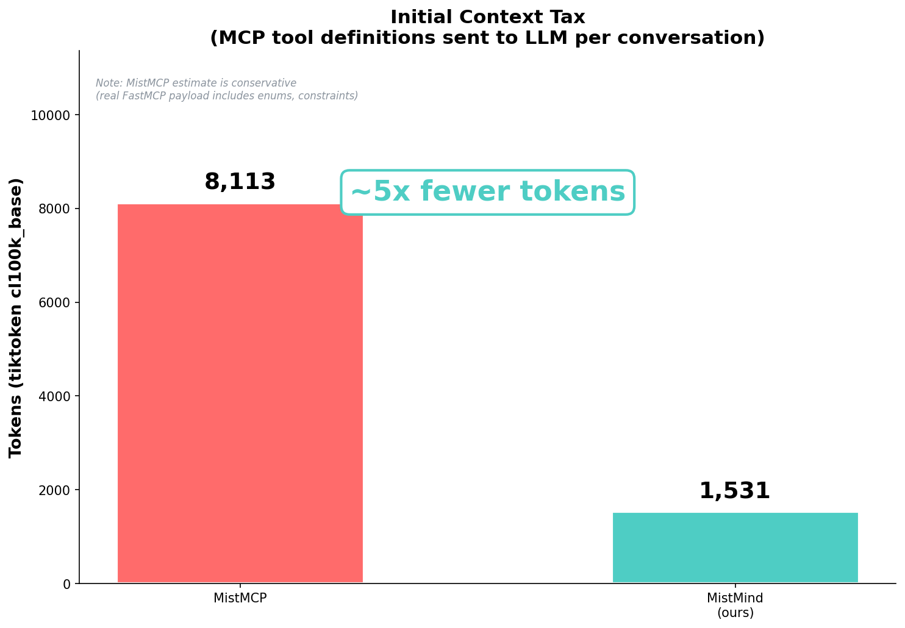
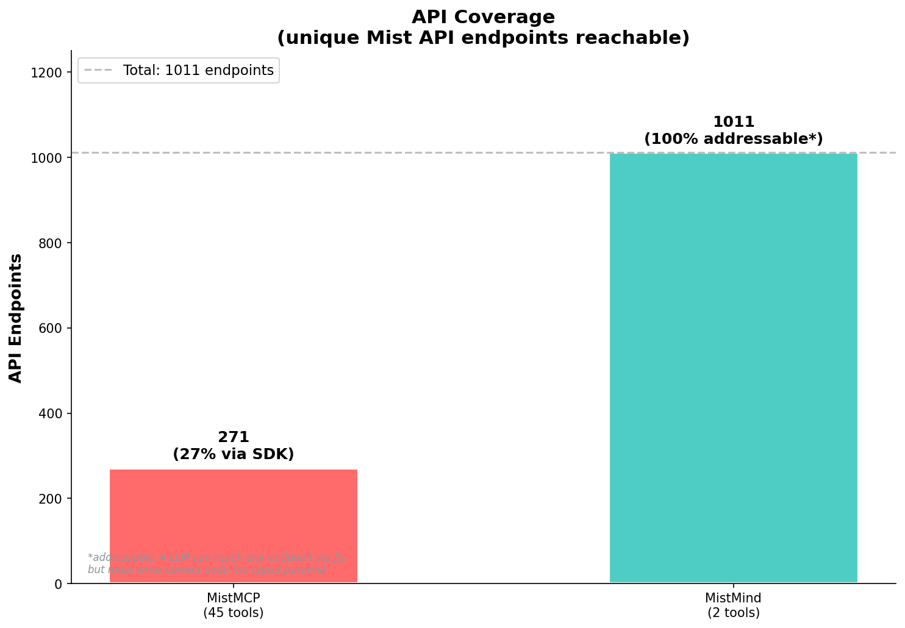
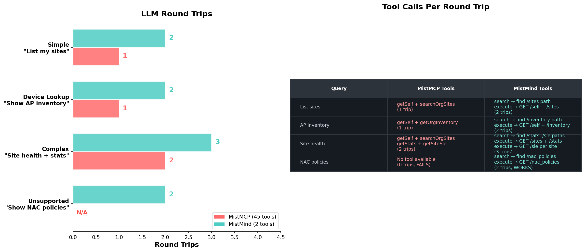
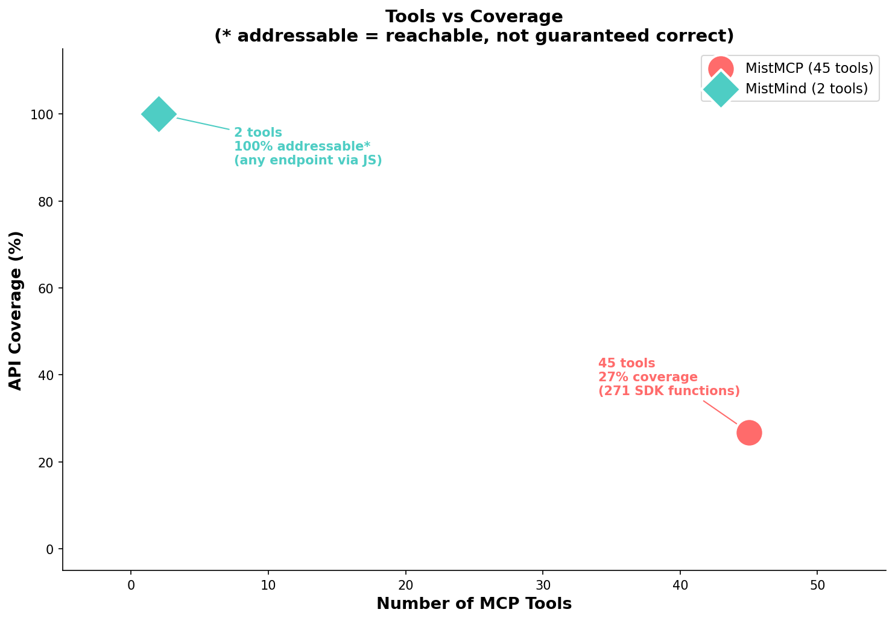
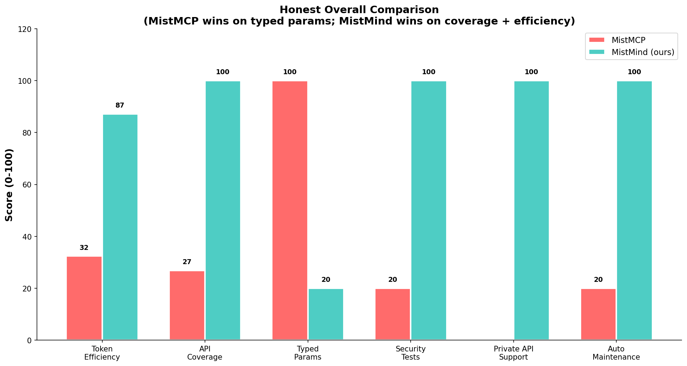

Benchmark comparison — Feb 26, 2026




| Metric | MistMCP (MistMCP) | MistMind (ours) | Winner |
|---|---|---|---|
| MCP Tools | 45 | 2 | MistMind (22x fewer) |
| Initial Tokens | ~8,100+ (likely higher with enums/constraints) | 1,531 | MistMind (~5x fewer) |
| API Coverage | 271 SDK functions (26.8%) | 1,011 endpoints addressable* | MistMind (broader reach) |
| Typed Parameters | Yes (Pydantic validation) | No (raw JS) | MistMCP (more reliable per-call) |
| Round Trips | 1-2 | 2-3 (but batches via Promise.all) | Depends on use case |
| Maintenance | Manual (sync with API) | Auto (regenerates from spec) | MistMind |
| Private API Support | No | Yes (any OpenAPI spec) | MistMind |
| Security Tests | Standard (not published) | 233 tests, 127 real Deno sandbox | MistMind |
| Hardcoded Schemas | 1.6 MB / 320K tokens (schemas_data.py) | 0 (reads from spec at runtime) | MistMind |
| * addressable = LLM can reach any endpoint via JS, but must write correct code. No typed params or validation — the LLM can get it wrong. |
| MistMCP advantages: Typed Pydantic parameters, domain-specific logic (derived configs, template resolution), lower latency for known endpoints (no search step). |
| MistMind advantages: Lower token cost, broader coverage, works on any OpenAPI 3.x REST spec, auto-maintenance, Promise.all batching. |
| Token estimates: MistMCP number is conservative (our regex parse). Real FastMCP payload includes enum values, JSON Schema constraints, defaults — likely 9,000-12,000 tokens. |
All Mist-specific terms replaced: orgs→entities sites→locations devices→nodes wlans→wireless_networks mist→acme juniper→genericcorp
| Check | Result |
|---|---|
| Index generated successfully | ✅ Pass |
| Correct endpoint count (1,011) | ✅ Pass |
| API hierarchy detected | ✅ Pass |
| Auth endpoints found | ✅ Pass |
| Pagination patterns detected | ✅ Pass |
| No "mist" in output | ✅ Pass |
| No "juniper" in output | ✅ Pass |
| Token count similar (~871 vs ~869) | ✅ Pass |
✅ MistMind works on completely unknown APIs — zero domain-specific knowledge required.
